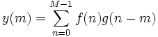

Die Korrelation wird normalerweise zwischen zwei Signalen berechnet, um ihre Ähnlichkeit und die Zeitverzögerung zwischen ihnen zu analysieren. Wenn zwei Signale identisch sind, wird die Autokorrelation berechnet. Dies illustriert, wie die Signale einer verzögerten Version ihrer selbst ähneln.
Die Korrelation kann linear oder zirkulär sein. Im Allgemeinen sollte die lineare Korrelation verwendet werden, wenn die Eingabesignale Impulse enthalten, während die zirkuläre Korrelation eher verwendet werden sollte, wenn sich die Signale periodisch wiederholen.
Angenommen f(n) und g(n) sind zwei Signale der gleichen Länge M. Ihre Korrelation kann folgendermaßen definiert werden:

Beachten Sie, dass - sind die Eingabesignale nicht gleich lang - die kürzere Länge mit Nullen aufgefüllt wird, um die gleiche Länge wie das andere Signal aufzuweisen. Bei der linearen Korrelation ist die Länge der Ergebnissequenz 2M-1, während die Länge der Ergebnissequenz für zirkuläre Korrelation M ist.
Der Wert der berechneten Korrelation zeigt den Ähnlichkeitsgrad zwischen den Signalen. Wenn der Wert groß ist, werden die beiden Signale als sehr ähnlich angesehen. Wenn er dagegen nahe bei Null liegt, wird angenommen, dass die zwei Signale keine lineare Beziehung besitzen. Wenn die Korrelation normiert ist (das Kontrollkästchen Normalisieren ist aktiviert), liegt der Wert zwischen 0 und 1. In diesem Fall ist es einfacher, die Ähnlichkeit zwischen den Signalen zu beurteilen. Wenn die normierte Korrelation 1 oder -1 beträgt, korrelieren sie perfekt.
Das Zeichen der Korrelation weist auf die Richtung der Verbindung hin. Eine positive Korrelation lässt vermuten, dass die Änderung eines Signals das andere Signal dazu veranlasst, sich in die gleiche Richtung zu wenden. Wenn die Korrelation negativ ist, verursacht die Erhöhung eines Signals die Verringerung des anderen. Dementsprechend hat die Verringerung des einen Signals die Erhöhung des anderen zur Folge.
Um Korrelation zu verwenden: